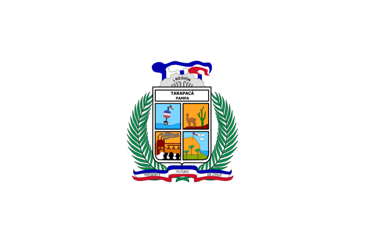
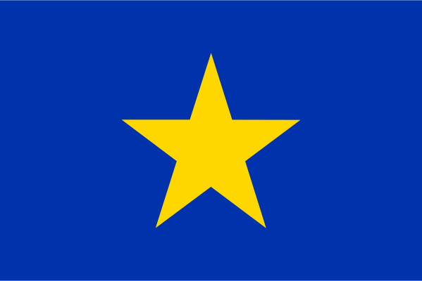
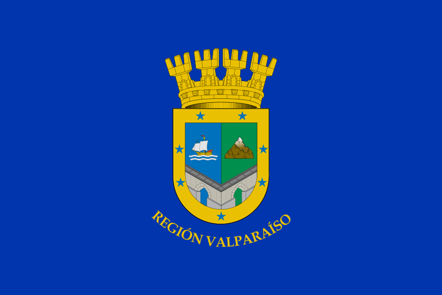

Región de Arica y Parinacota
I Región
Descripción breve sobre la región.
- Tamaño 16.873,3 Km²
- Habitantes 226.068
- Capital Arica
- Comunas Arica Camarones General Lagos Putre

Región de Tarapacá
II Región
Descripción breve sobre la región.
- Tamaño 42.225,8 Km²
- Habitantes 330.508
- Capital Iquique
- Comunas Alto Hospicio Iquique Camiña Colchane Huara Pica Pozo Almonte

Región de Antofagasta
III Región
Descripción breve sobre la región.
- Tamaño 126.049,1 Km²
- Habitantes 607.534
- Capital Antofagasta
- Comunas Antofagasta Mejillones Sierra Gorda Taltal Calama Ollagüe San Pedro de Atacama María Elena Tocopilla

Región de Atacama
IV Región
Descripción breve sobre la región.
- Tamaño 75.176,2 Km²
- Habitantes 286.168
- Capital Copiapó
- Comunas Chañaral Diego de Almagro Caldera Copiapó Tierra Amarilla Alto del Carmen Freirina Huasco Vallenar

Región de Valparaíso
V Región
Descripción breve sobre la región.
- Tamaño 16.396,1 Km²
- Habitantes 1.815.902
- Capital Valparaíso
- Provincias Isla de Pascua Los Andes Petorca Quillota San Antonio San Felipe de Aconcagua Valparaíso Marga Marga